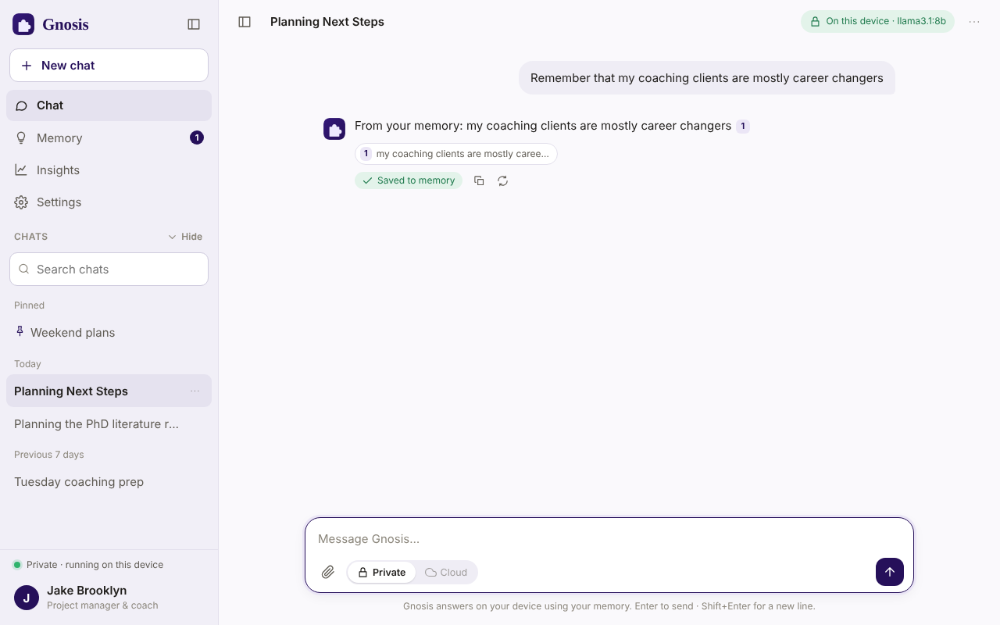
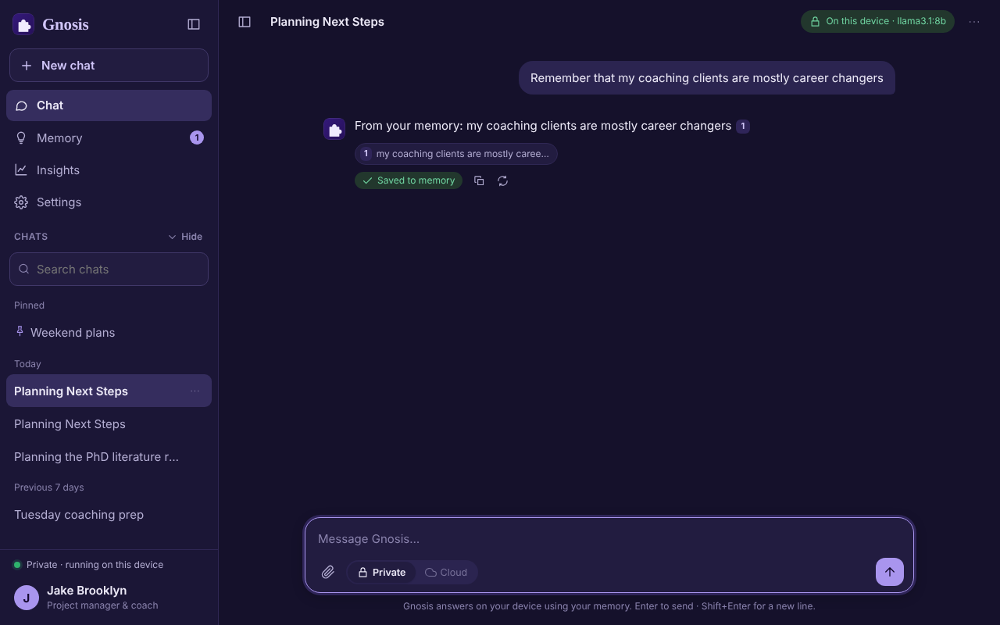

Private, local-first personal AI
Your mind,
kept private.
Gnosis is an assistant that runs on your own computer. It remembers your notes, files and links, answers from them, and shows you where every answer came from.


What it does
An assistant that already knows your world.
Chats that remember
A separate conversation for every topic. Say “remember that…” and it is saved on the spot.
One memory for everything
Notes, documents and web links, indexed on your computer. Edit or delete any of it.
Answers with sources
Each reply points to the memory it used, so you can check it.